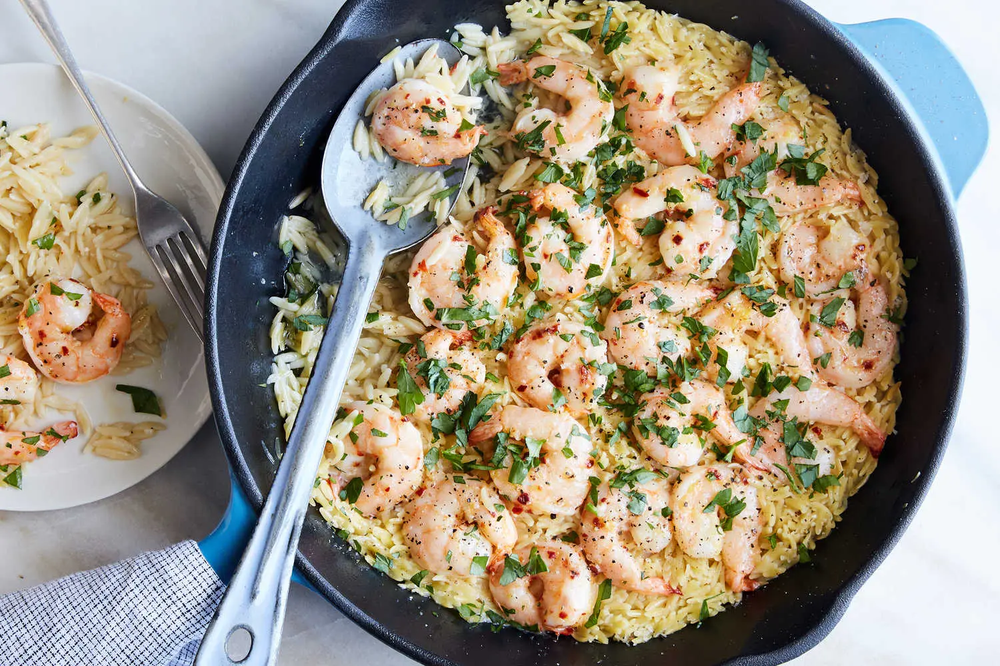

Shrimp Orzo Scampi

The universal appeal of shrimp scampi, frankly, isn't the shrimp but the pan sauce: garlicky butter lightened with white wine and bursts of lemon, parsley and red-pepper flakes. Scampi is often tossed with pasta or served with crusty bread, but this version instead uses quick-cooking orzo. It simmers directly in the pan sauce, imparting a starchy gloss — and soaking up the garlicky scampi flavors. Toss the shrimp with some garlic, lemon zest and red-pepper flakes to marinate while the pasta gets a head start on the stove, then simply toss the shrimp on top of the orzo to steam. It all comes together in a flash, and feels effortless.
Pair this dish with Caesar salad, steamed broccoli or arugula, or bask in its simple comfort, straight from a spoon.
Ingredients
- 1 pound large shrimp, peeled and deveined
- 3 tablespoons extra-virgin olive oil
- 1 tablespoon lemon zest, plus 1 tablespoon juice (from 1 lemon)
- 1/2 teaspoon red-pepper flakes
- Kosher salt (such as Diamond Crystal) and black pepper
- 4 garlic cloves, minced
- 2 tablespoons unsalted butter
- 1 cup orzo
- 1/3 cup dry white wine
- 2 cups boiling water, seafood stock or chicken stock
- 3 tablespoons finely chopped parsley
Steps
- In a medium bowl, stir together shrimp, 1 tablespoon olive oil, lemon zest, red-pepper flakes, 1/2 teaspoon salt, 1/4 teaspoon pepper and half of the garlic. Set aside to marinate. (This step can be done up to 1 hour in advance.)
- Add butter, remaining olive oil and remaining garlic to a medium skillet set over medium heat. When the butter starts to bubble, add the orzo and ½ teaspoon salt and cook, stirring often, until the orzo is toasted, about 2 minutes, adjusting the heat as necessary to prevent the garlic from burning. Carefully add the wine — it will bubble — and stir until absorbed, about 1 minute. Stir in water, reduce heat to low, cover, and cook until orzo is al dente, about 12 minutes.
- Add the shrimp in a snug, even layer on top of the orzo, cover, and cook until all the shrimp is pink and cooked through, 2 to 4 minutes. Remove from heat and let sit, covered, 2 minutes.
- Sprinkle with parsley and lemon juice, season with salt and pepper, and serve immediately.